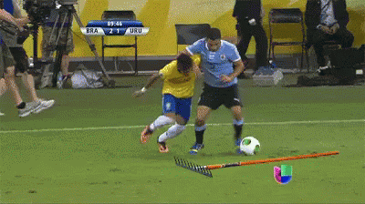

 Introducción a mi_tema
dd/mes/aa
Contexto
Según los propios adeptos, el fútbol es el deporte más bello, complejo y atrapante de todos. En primer lugar su complejidad se debe al estricto reglamento, que obliga al jugador a poseer un alto grado de habilidad especial, puesto que los mismos segmentos corporales con los cuales se desplaza, son los encargados también de dominar el balón mientras se avanza a velocidades y direcciones cambiantes a través del campo de juego sorteando múltiples obstáculos móviles (rivales) lo que Popov (1999) denomina ROM (reacción a objetos móviles). El Fútbol, posee belleza de movimientos y sutilezas, pero también acciones violentas y error humano; sus seguidores difícilmente puedan escapar al cúmulo de sentimientos encontrados que inevitablemente irradia: alegría, tristeza, sorpresa, decepciones, camaradería, agresividad, frustración, etc. todos ellos en un orden de aparición cambiante dentro de un mismo encuentro. En su reinado conviven los talentosos y los rústicos por igual, puede ser multitudinario o solitario pero sin dudas, es eficazmente atractivo para todos sus protagonistas. En resumen fútbol es "pasión", es un sentimiento difícil de definir tanto para los pobres en lectura como también para los colegiados.
Desarrollo
El juego moderno fue creado en Inglaterra tras la formación de la Football Association, cuyas reglas de 1863 son la base del deporte en la actualidad. El organismo rector del fútbol es la Fédération Internationale de Football Association, más conocida por su acrónimo FIFA. La competición internacional de fútbol más prestigiosa es la Copa Mundial de Fútbol, organizada cada cuatro años por dicho organismo. Este evento es el más famoso y con mayor cantidad de espectadores del mundo, doblando la audiencia de los Juegos Olímpicos.
Motivación
Podemos ver que un jugador está motivado cuando asiste a todos los entrenamientos y cuando se esfuerza en todos y cada uno de ellos. Esto suele traducirse en una mejora de su rendimiento de forma continua, lo que a largo plazo le convierte en un mejor jugador.

 Ranking de ejemplo
Ranking de ejemplo
 Sitios oficiales ejemplo
Sitios oficiales ejemplo